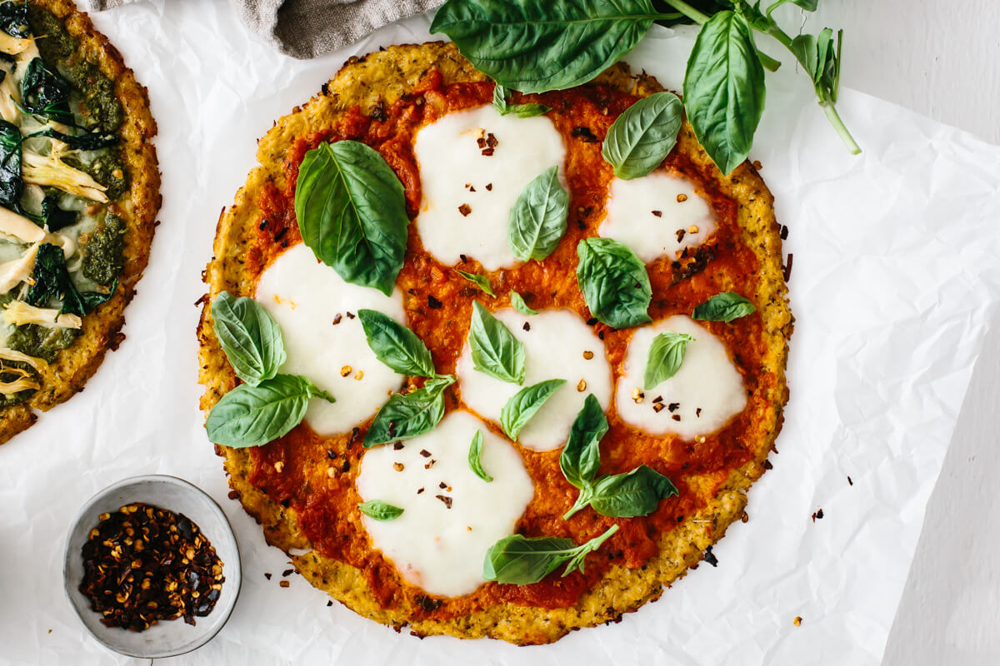

HOME /Cauliflower Pizza

Description
Traditional cheesy, greasy pizza isn't great for our health. This clean
alternative tastes better and satisfies those weekend cravings.
Ingredients
- 1 head cauliflower, cut into florets
- 2 eggs, lightly beaten
- 1 cup almond flour
- 1½ tbsp coconut flour
- ½ tsp ground cumin
- 1½ tbsp olive oil
- 1 handful mozzarella, shredded (optional)
- 1½ tbsp fresh rosemary
For the toppings
- 2½ tbsp ricotta
- 1 basket cherry tomato, halved
- ½ eggplant, sliced
- 2½ tbsp pesto
Steps
-
AdPreheat the oven to 180°C or 350°F. Line a large baking tray with
baking paper.
-
Place the cauliflower florets in a food processor, and blend until it
forms a rice-like consistency. You can either steam the cauliflower
first or use it raw; it works both ways. Alternately, use store-bought
cauliflower rice.
-
Place the cauliflower in a clean tea towel and squeeze out as much
moisture as possible. Don't skip this step, as it's the key to making a
crispy pizza base.
-
In a mixing bowl, place the cauliflower, whisked eggs, almond meal,
coconut flour, cumin or curry powder, olive oil, mozzarella (if using),
rosemary plus salt and pepper. Press the mixture firmly.
-
Place the cauliflower mixture in the center of the tray. Place a sheet
of baking paper on top and use your palms or a rolling pin to flatten it
into a circle. Top the pizza with pesto, ricotta, eggplant and baby
tomatoes.
-
Bake for 35-40 minutes or until the base is firm and slightly browned.
You may also want to add more seasoning, plus some extra olive oil.
-
Take the pizza out of the oven and allow it to cool for a few minutes
before slicing.
Notes
To make this recipe vegan: Replace the egg with a chia egg.
Add 1 tbsp chia plus 3 tbsp water in a small bowl and stir to combine.
Allow to sit for 10 minutes. Top with your favorite nut cheese.